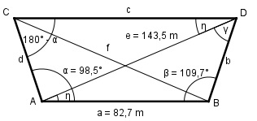

Aufgabe 154 Wie groß sind die Seite c und die Diagonale f des Trapezes?

Im Dreieck ABD: Fall SSW: Sinussatz: a e ------- = ------- |*sin γ sin γ sin β e * sin γ a = ------------ |*sin β sin β a * sin β = e * sin γ | :e a * sin β sin γ = ------------ = e 82,7 m * sin 109,7° 82,7 m * 0,9415 = --------------------- = ----------------- = 143,5 m 143,5 m = 0,5426 --> γ = 32,9° η = 180° - β – γ = 180° - 109,7° - 32,9° = = 37,4° Fall SWS: Sinussatz: b e ------- = -------- |*sin η sin η sin β e * sin η b = ------------ = sin β 143,5 m * sin 37,4° 143,5 m * 0,6074 = --------------------- = ------------------- = sin 109,7° 0,9415 = 92,6 m Im Dreieck ADC: Winkel bei C = 180° - α = 180° - 98,5° = 81,5° Fall SSW: d e ------- = ----------- |*sin η sin η sin 81,5° e * sin η d = ------------ = sin 81,5° 143,5 m * sin 37,4° 143,5 m * 0,6074 = --------------------- = ------------------- = sin 81,5° 0,989 = 88,1 m Fall SSW: Winkel bei A = α – η = 98,5° - 37,4° = 61,1° c e ----------- = ----------- |*sin 61,1° sin 61,1° sin 81,5° e * sin 61,1° 143,5 m * 0,8755 c = --------------- = ------------------- = 127 m sin 81,5° 0,989 Fall SSS: Cosinussatz: f2 = a2 + d2 - 2 * a * d * cos α f2 = 82,72 + 88,12 - 2 * 82,7 * 88,1 * cos 98,5° = 82,72 + 88,12 - 2 * 82,7 * 88,1 * (-0,1478) = = 16 754,6 |√ f = 129,4 m